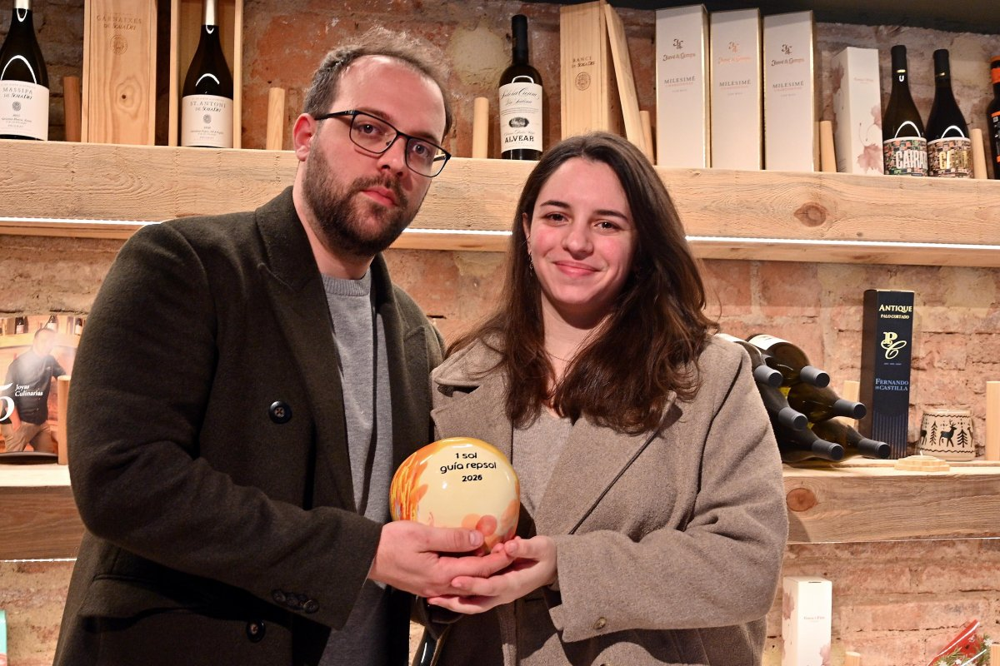

Un proyecto de vida en el corazón de Reus
Hay restaurantes que abren con la prudencia de quien sabe que el camino es largo. Y hay otros que abren porque ya no hay manera de no abrirlos. Cervus pertenece a la segunda categoría.
Nil Bono y Lucía Fernández llegaron al Raval de Jesús a finales de 2024 con las ideas muy claras y el bagaje muy sólido. Entre los dos acumulan dieciocho años de trabajo en cocinas de alto nivel: estrella Michelin en Stuttgart, Can Bosch en Cambrils, Deliranto en Salou. El territorio ya los conocía, aunque ellos todavía no tenían nombre propio aquí. Cervus fue la forma de ponerlo.

"Hacer lo que hacemos y hacerlo bien." — Nil Bono y Lucía Fernández
La noche que el círculo se cerró
Catorce meses después de abrir la persiana, el nombre de Cervus sonó en el Palau de Congressos de Tarragona cuando la Guía Repsol anunció sus nuevos Soles. Un reconocimiento que llegó antes de lo que nadie esperaba. Y el que entregó el galardón sobre el escenario fue Ricard Camarena, el primer maestro de Nil. Difícil imaginar un círculo que se cierre con más elegancia.
Ellos no esperaban nada. «No sabes si ha venido alguien a comer a tu restaurante, no sabes quiénes son. Son gente normal que viene a comer normal y se va normal. Después vas a la Gala y suena la flauta», explicaba Nil. Lo que esperaban, en todo caso, era mucho más modesto: que alguna guía los recomendara. «Eso para nosotros ya era un sueño», recordaba Lucía. El Sol llegó como «subir las escaleras de tres en tres».
La propuestaTres menús, dos orígenes, una sola carta de vinos
Cervus trabaja con tres menús degustación. El Oryza —«arroz» en latín— pone el cereal como gran protagonista. El Cervus amplía el recorrido con más elaboraciones. Y el Ad Finem es donde vuelcan todo el bagaje: el menú más largo, el más ambicioso, el que no deja nada en el tintero.
La carta de vinos es tan personal como la cocina: corta, muy viva, construida desde los dos orígenes. Referencias catalanas y referencias andaluzas que aquí apenas se conocen. No hay un sumiller que maride por protocolo. Hay dos cocineros que eligen los vinos que ellos mismos beberían.
Qué esperamos encontrarUna fusión que nace de dentro, no de la tendencia
Cervus no hace fusión porque esté de moda. La hace porque no puede hacer otra cosa. Nil es catalán, Lucía es andaluza. Su cocina es, literalmente, la historia de dos personas que se conocieron en Cambrils y decidieron que sus dos recetarios podían hablar el mismo idioma.
La Guía Repsol la describe como una cocina inquieta, de ensamblaje, donde el menú degustación transita entre los sabores de un Al-Àndalus contemporáneo y los trazos del recetario catalán que se cuelan en cada bocado. Producto de temporada, técnica depurada, y la valentía de operar en solitario: los dos cocineros en sala y cocina, sin brigada. Una apuesta que te obliga a estar en cada plato.
Esperamos encontrar una cocina precisa y con carácter. Platos que se argumentan solos. Una carta de vinos tan personal como la propuesta gastronómica. Y un espacio diáfano, con cocina vista, donde el comensal forma parte del proceso.
Y hay algo más que Nil señala con naturalidad: en el Camp de Tarragona hay mucha gente de descendencia andaluza. Cualquiera puede verse identificado en lo que Cervus propone. No es un restaurante que habla de dos territorios lejanos. Es un restaurante que habla de aquí, de esta tierra de encuentro, con la honestidad de quien no puede cocinar de otra manera.

Las personas detrás de Cervus
Nil Bono
Cocina
Formado junto a Ricard Camarena. Trayectoria en Stuttgart (estrella Michelin), Can Bosch (Cambrils) y Deliranto (Salou). Dieciocho años de oficio antes de poner su propio nombre en la puerta.
Lucía Fernández
Cocina & Sala
Escuela de hostelería de Sevilla. Prácticas en Cambrils —donde se conocieron—, etapa en Deliranto. Trae la mirada andaluza que convierte Cervus en algo que ninguno de los dos podría haber construido solo.
Ficha del restaurante
Las dos noches se vivirán con el mismo menú y el mismo criterio. La crónica llegará después, con la valoración conjunta de los socios. De momento, esto es lo que sabemos. El resto, lo descubriremos en el Raval de Jesús.
Fuentes consultadas: Diari de Tarragona, Diari Més, Vadegust.cat
Newsletter
¿Quieres recibir la próxima crónica antes que nadie?
Crónicas de los restaurantes visitados, vinos recomendados y novedades del Camp de Tarragona. Una vez al mes, sin ruido.
Sin spam · Baja cuando quieras.